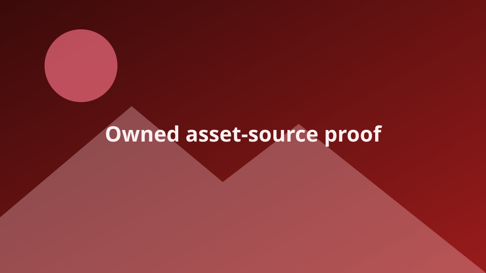

Asset Source URL XSS Proof
A separate, benign fixture for the assetSources[].url iframe path. The payload only adds a visible marker to the parent Create document.
1 · Stored config
javascript: asset URL2 · Sinkunsandboxed iframe
src3 · Proofparent DOM marker
Expected marker: data-netlify-create-asset-source-xss="confirmed"
